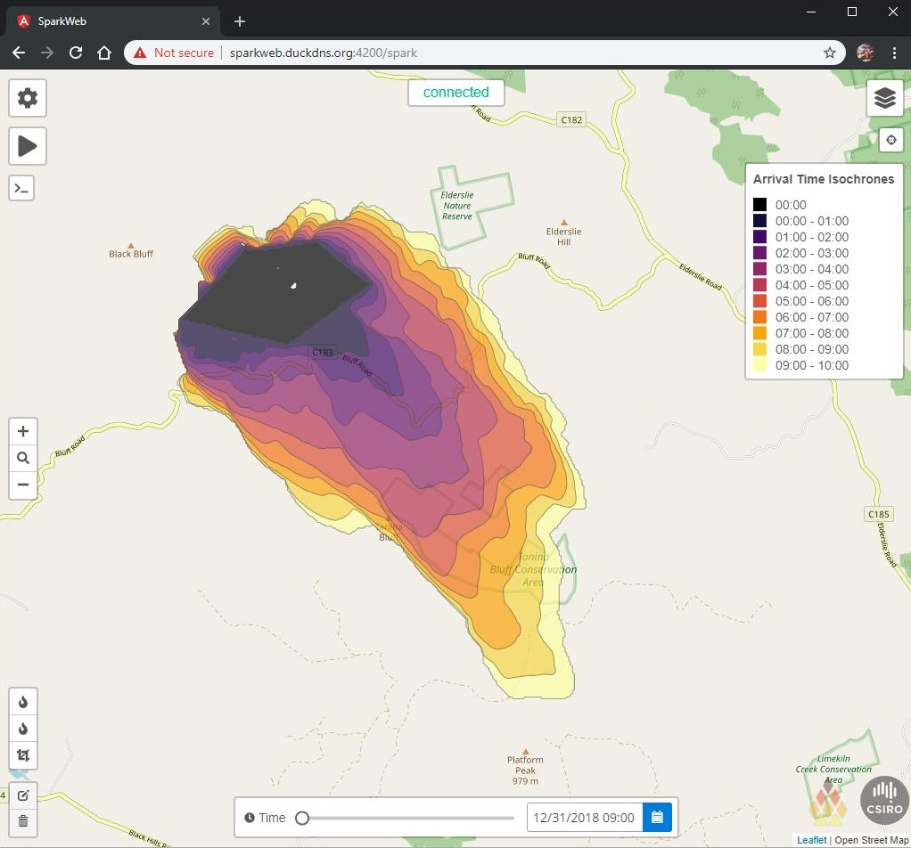
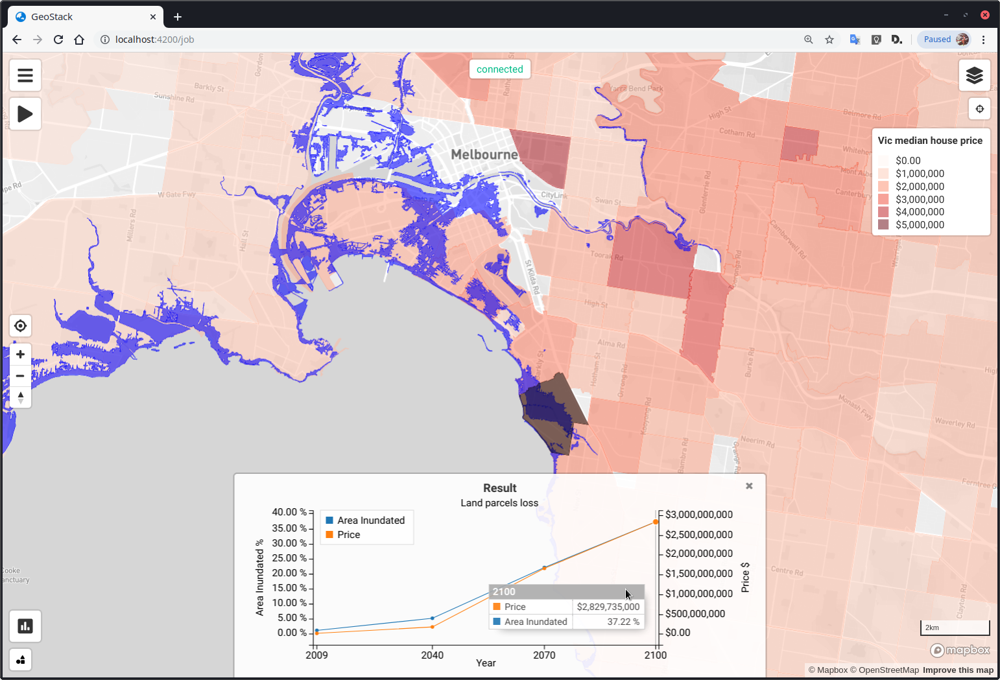
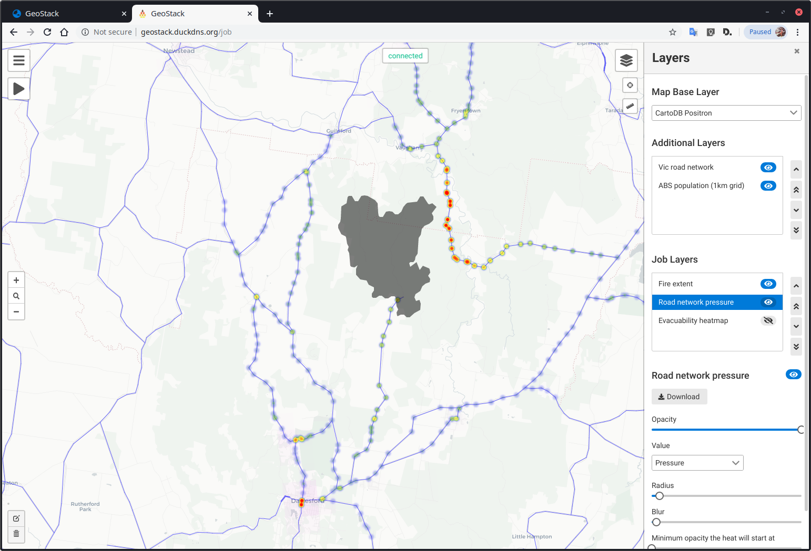
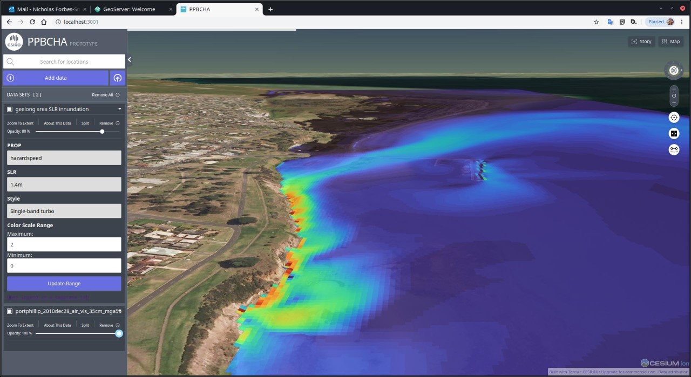
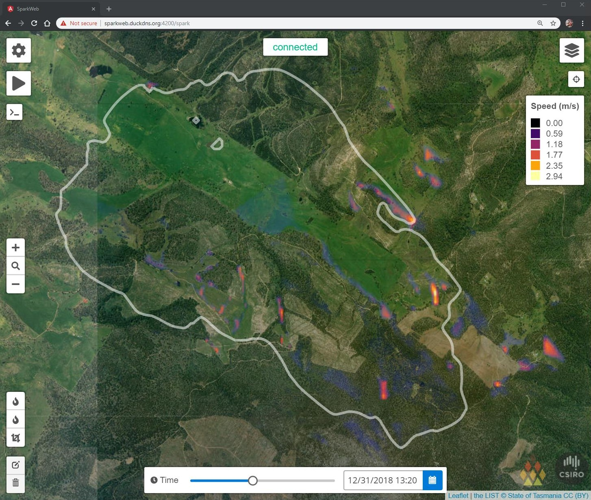

## Wrangling GeoTIFFs in the browser Nick Forbes-Smith <span style="font-weight: 100; font-size: 50%;">CSIRO's Data61 — RMIT University</span><br> <span style="font-weight: 100; font-size: 50%;">Hobart, Tasmania, Australia</span>
The first <span style="font-weight: 100">(and last)</span> FOSS4G Geotiff.js talk! <h1 class="fragment">Nope</h1>
<ul> <li class="fragment">Talk 1</li> <li class="fragment">Talk 2</li> <li class="fragment">Talk 3</li> <li class="fragment">Talk 4</li> <li class="fragment">Talk 5</li> </ul>
## I make - Web map apps w/ - distributed job processing back-ends <span style="font-weight: 100">for natural hazard modeling</span>
Wildfire 
Climate change risk 
Evacuation 
Flood 
## JS libraries <ul> <li class="fragment">Angular, PrimeNG</li> <li class="fragment">Mapbox GL JS, Terria/Cesium</li> <li class="fragment">d3, <a>Plotty</a></li> <li class="fragment"><a>Geotiff.js</a>, <a>Georaster</a></li> <li class="fragment"><a>GPU.js</a>, <a>Geoblaze</a></li> </ul>
## Show GeoTIFF on Web‑map <span style="font-weight: 100; font-size: 50%;">Not going to talk about GeoTIFF</span> -------------- Usual method: WMS
### WMS 1. Load GeoTIFF into WMS Server (GeoServer) 2. Create style(s) 3. Publish 4. Client (mapbox, leaflet...) requests static image tiles
Okay, this is great -------------- We're done right?
...GeoTIFFs are being created on demand?
...interactive/dynamic styling? <!-- Dynamic styling is painful (and also makes caching impractical) --> <!-- Every change of style fetches new tiles from server -> every request is time and money! -->
...inspect raw values? <!-- No access to actual values - to inspect values have to use GetFeatureInfo WMS request -->
...run script on values?
...I have millions (or **BILLIONS!**) of geotiffs?
### So many requests to the server! Even if the browser already has the data
Forget that rubbish! ## We have GeoTIFF.js and WebGL! <span style="font-weight: 100; font-size: 50%;">I'm joking WMS is not rubbish</span>
Single layer
Colour scale
Set min/max and clamp
Blending layers with CSS 
## Analyse Geotiff -------------- Usual method: WPS
### WPS 1. Write python script - Read in data via WCS - Crunch the numbers - Return result 2. Load scripts into WPS server (eg PyWPS) 3. Publish 4. Client executes WPS processes
Okay, this is great too
...I already have the data in the browser?!
...more requests to a server!
...100s of requests using the same data in realtime? <!-- Cache values between analysis -->
<span style="font-weight: 100">Ridiculous</span>
But we can also do this with ## JavaScript in the browser! <span style="font-weight: 100; font-size: 50%;">Wooo "edge computing"!</span>
Contouring
Statistics
Raster algebra https://www.omnicalculator.com/physics/wet-bulb#how-to-calculate-the-wet-bulb-temperature
## What? How? -------------- - Fetch + decode data — <a>Geotiff.js</a> - Data wrapper — <a>Georaster</a> - Visualise — <a>Plotty</a> - Analyse — <a>Geoblaze</a>, <a>GPU.js, (d3)</a>
## Geotiff.js Pure JavaScript implementation of Geotiff - Reads in file - Decodes and decompresses - HTTP range requests for subsets (exent or band)
## Link to geotiff code
## Georaster > Wrapper around Georeferenced Rasters GeoTIFF, NetCDF, JPG, and PNG — provides a standard interface
## Plotty Colourise 2d raster using Canvas API and WebGL (with JS fallback) Set value domain, clamp, transform matrix, colorscale, raster/band algebra <!-- Show plotty NDVI (show set expression) - more RGB imagery -->
## Geoblaze - Basic statistics (min, max, mean, mode) - Band arithmetic and histogram generation No WebGL - all done on CPU.
## GPU.js Kernal matrix computation Can be used for raster algebra Reprojection... Interpolation <span style="font-weight: 100; font-size: 50%;">and other crazy stuff</span>
## d3-contour Realtime contouring / isobands
## Demo
## Limitations -------------- - File size - Projection (Web mercator...) - Client-side computation (GPU) - Service-oriented?
## File size WCS can query NetCDF (faster?) <!-- then getting file through WCS and then WebGL rendering faster and more interactive --> <!-- Smaller datasets generate more PNG than original dataset!? --> <!-- Size comparison between geotiff and png -->
## Client-side computation decompress, render pixels... Limited number crunching
## Complex queries Drill through dimensions? - Might have to fetch single value from many files
## Addex complexity Just want to show static imagery? Probably not worth it - WMS is supported by everything! <!-- mainly directed towards greyscale scientific datasets!!! -->
## WMS is service oriented JS librares are for client-side use <span style="font-weight: 100; font-size: 50%;">Can be used with Node.js but Python libraries are better!</span>
## Other raster formats WMS supports more formats... I have turned 100 NetCDFs (15GB) into 400,000 geotiffs!!! This is only 8 of 32 CMIP5 projects and only 4 of 8-10 observation
## Future -------------- - pngraw - COG - Satelite imagery - NetCDF - Reprojection (WebGL?)
### pngraw 24 bit integer packed into RGB channels - see mapbox elevation
### NetCDF - very fast query - if chunked properly - Can drill through many dimensions
## Other cool things
### 3D
### Cog Cloud Optimized GeoTIFFs... - Layout friendly for network consumption (HTTP range requests) - tiled, compressed, overview images - efficient access to subset
### Hillshade
### PNG raw
## I want this now! -------------- SHow Ivan talk + other Leaflet, layers... https://geotiff.io/ - have a play with geotiffs in the browser and geoblaze...
## Thanks -------------- Questions?